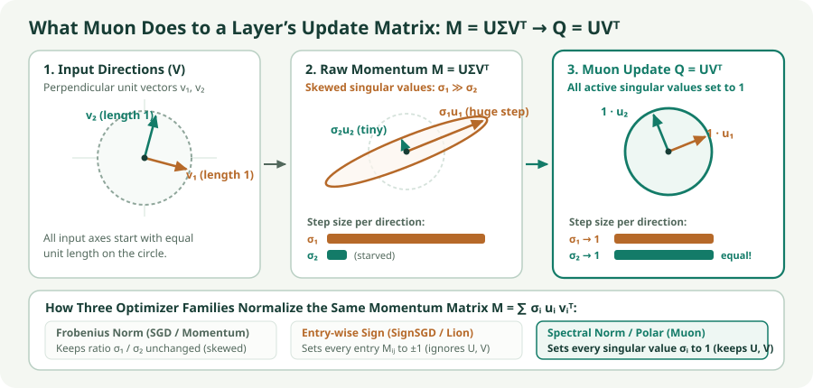

Muon, Part 1: A Matrix Has More Than Coordinates
Jump to the loss-contour trajectory demo ↓
Understand singular directions, why orthogonalizing the momentum matrix equalizes singular values, and which parameters belong in Muon.
Coordinate-wise optimizers (Adam, RMSprop, Lion) treat a weight matrix $W\in\mathbb R^{m\times n}$ as a flat list of $mn$ independent numbers. Muon instead treats $W$ as a linear map: it accumulates a momentum matrix $M_t$, then replaces $M_t=U\Sigma V^\top$ with its orthogonal polar factor $Q_t=UV^\top$ so that every active singular direction takes an equal-sized step.
1. Why a linear layer’s gradient has skewed singular values
For a linear layer $y=Wx$ ($W\in\mathbb R^{m\times n}$) and a batch of $B$ examples, let $\delta_b=\partial\ell_b/\partial y_b\in\mathbb R^m$ be the backpropagated output gradient. The batch gradient is a sum of rank-$1$ outer products:
Write the singular value decomposition (SVD) of the momentum-filtered gradient matrix $M\in\mathbb R^{m\times n}$ of rank $r\le\min(m,n)$:
Here $v_i\in\mathbb R^n$ are orthonormal input directions, $u_i\in\mathbb R^m$ are orthonormal output directions, and $\sigma_i$ measures how strongly $M$ stretches $v_i$ into $u_i$. In neural networks, activations $x_b$ and gradients $\delta_b$ concentrate along a few dominant directions, making $\sigma_1\gg\sigma_r$. A raw momentum step $\Delta W=-\eta M=-\eta\sum_{i=1}^r\sigma_i u_i v_i^\top$ updates the dominant direction $\sigma_1 u_1 v_1^\top$ aggressively while barely moving weaker directions $(\sigma_i\ll\sigma_1)$.
2. The idealized polar update: $\Sigma\to I$
Muon replaces every nonzero singular value $\sigma_i$ with $1$, mapping $M$ to its orthogonal polar factor $Q$:
For a full-rank matrix ($r=\min(m,n)$), $Q$ is orthogonal if square and semi-orthogonal if rectangular:

Updating $W_t=W_{t-1}-\eta Q_t$ adds a semi-orthogonal step $-\eta Q_t$ to $W_{t-1}$; the sum $W_t$ itself does not need to stay orthogonal.
3. Derivation: steepest descent under the spectral norm $\|D\|_2$
Why is $Q=UV^\top$ the natural matrix step? For a linear layer $\Delta y=(D)x$, the maximum output change produced by a unit input vector $\|x\|_2=1$ is governed by the spectral norm (largest singular value) $\|D\|_2=\max_{\|x\|_2=1}\|Dx\|_2=\sigma_{\max}(D)$.
Seek the matrix step $D\in\mathbb R^{m\times n}$ that minimizes the first-order loss change $\langle M,D\rangle_F=\operatorname{tr}(M^\top D)$ subject to a spectral-norm budget $\|D\|_2\le\eta$. Substitute $M=U\Sigma V^\top$ and define $\widetilde D=U^\top DV$:
Because $U$ and $V$ have orthonormal columns, $|\widetilde D_{ii}|=|u_i^\top Dv_i|\le\|D\|_2\le\eta$ for every $i$. Since each $\sigma_i>0$, the sum is minimized by setting every diagonal entry to its lower bound $\widetilde D_{ii}=-\eta$ (and off-diagonals to $0$), giving $\widetilde D=-\eta I_r$:
Different norm budgets on $D$ yield three classic optimizer families:
4. Lab: matrix normalization versus entry-wise signs
Construct $M=U\operatorname{diag}(s_1,s_2)V^\top$ using two adjustable rotations to compare the input matrix, its exact polar factor $UV^\top$, and the entry-wise sign matrix $\operatorname{sign}(M)$.
What does the matrix do to a circle?
Each panel transforms the same unit circle. All three panels use the same scale; their matrix entries and computed singular values are listed below them.
- Change only $(s_1,s_2)$: for any $s_1,s_2>0$, the polar factor $UV^\top$ stays completely unchanged because it depends only on $U$ and $V$.
- Change a rotation angle: notice how $UV^\top$ rotates smoothly, whereas $\operatorname{sign}(M)$ jumps discontinuously whenever an entry crosses zero.
- Set $s_2=0$ (rank-deficient): for a rank-$r$ matrix $M=\sum_{i=1}^r\sigma_i u_i v_i^\top$, the partial polar factor is $Q=\sum_{i=1}^r u_i v_i^\top$—zero singular values stay $0$ rather than inventing noise directions.
5. Lab: watch Muon descend through the loss contours
The plot uses the same eight-example quadratic objective as the SGD demo, embedded in a $2\times 2$ matrix parameter $W=\left[\begin{smallmatrix}w_1&w_2\\0&0\end{smallmatrix}\right]$. Each step updates the $2\times 2$ momentum matrix, optionally applies Nesterov lookahead, normalizes by the Frobenius norm, and runs the selected number of quintic Newton–Schulz iterations before updating $W$.
Muon: parameter path and loss by iteration
Start with five NS iterations per update. Use Step, Run 10 steps, or Play, and compare learning rates 0.08 and 0.02.
6. Complete Muon update, aspect-ratio scaling, and state memory
Combining momentum $B_t$, optional Nesterov lookahead $\widetilde B_t$, polynomial orthogonalization (derived in Part 2), and decoupled weight decay $\lambda$ gives the full Muon update for a weight matrix $W_t\in\mathbb R^{m\times n}$:
Notice two scale properties:
- Scale invariance of the input: for any scalar $c>0$, $\operatorname{polar}(c\widetilde B_t)=\operatorname{polar}(\widetilde B_t)$, so EMA momentum $(1-\beta)G_t+\beta B_{t-1}$ and heavy-ball momentum $G_t+\beta B_{t-1}$ yield the exact same normalized matrix $\widetilde B_t/\|\widetilde B_t\|_F$.
- Aspect-ratio factor $\sqrt{\max(1,m/n)}$ (or $\sqrt{m/n}$): an exact full-rank polar factor $Q\in\mathbb R^{m\times n}$ has $\min(m,n)$ unit singular values, so $\|Q\|_F=\sqrt{\min(m,n)}$ and its root-mean-square entry size is $\|Q\|_F/\sqrt{mn}=1/\sqrt{\max(m,n)}$. Multiplying by $\sqrt{\max(1,m/n)}$ prevents tall layers ($m\gg n$) from receiving tiny per-coordinate updates.
# Conceptual matrix-only Muon step (Newton-Schulz derived in Part 2)
B = beta * B + grad
B_tilde = grad + beta * B if nesterov else B
Q = newton_schulz_5(B_tilde)
scale = max(1.0, rows / cols) ** 0.5
W *= 1 - lr * weight_decay
W -= lr * scale * QOptimizer state memory: Unlike AdamW (which stores two buffers $m_t$ and $v_t$, $+8\text{ bytes/parameter}$ in FP32), Muon stores only one state number per parameter—the momentum buffer $B_t$ ($+4\text{ bytes/parameter}$ in FP32, matching SGD with Momentum)—because the orthogonalized direction $Q_t$ is computed on the fly via matrix multiplications.
7. Parameter routing: why embeddings and heads still use AdamW
Muon is designed specifically for dense hidden-layer weight matrices (such as MLP projections and attention $W_Q,W_K,W_V,W_O$). Other parameters must be routed to AdamW:
- 1D parameters (biases, RMSNorm/LayerNorm gains): have no 2D row-column linear map structure.
- Token embeddings: for a one-hot token input $x=e_k$, the gradient $G=\delta e_k^\top$ is nonzero only on row $k$; rows represent separate vocabulary items rather than a dense basis to orthogonalize.
- Unembedding / classification head: maps hidden states directly to vocabulary logits, where coordinate-wise second-moment adaptation in AdamW remains standard.
8. Questions worth answering
Dividing by $\|M\|_F=\sqrt{\sum_i\sigma_i^2}$ rescales all singular values by the same scalar, keeping their skewed ratios $\sigma_1/\sigma_i$ unchanged. Muon sets all nonzero singular values to $1$, equalizing step sizes across all active singular directions.
Full SVD on large matrices is slow on GPUs and poorly suited to low-precision Tensor Core matmuls. Part 2 shows how $5$ steps of a quintic Newton–Schulz matrix polynomial approximate $UV^\top$ using fast `bfloat16` matrix multiplications.
Sources
Keller Jordan, Muon: An optimizer for hidden layers in neural networks; Muon reference implementation; Bernstein and Newhouse, Old Optimizer, New Norm: An Anthology.